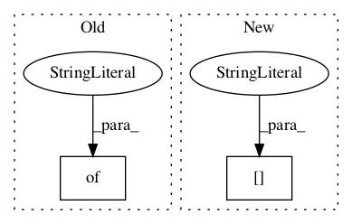

7ff7ed2cf2d3d9cab8b944d4194f6a3b180deaab,basenji/augmentation.py,,augment_deterministic_rc,#Any#,99

Before Change
seq, label, na = [data_ops[k] for k in ["sequence", "label", "na"]]
seq, label, na = ops.reverse_complement_transform(seq, label, na)
reverse_preds = tf.ones((), dtype=tf.bool)
data_ops_aug = {"sequence": seq, "label": label, "na": na, "reverse_preds":reverse_preds}
return data_ops_aug
def augment_stochastic_rc(data_ops):
After Change
data_ops_aug: augmented data ops
data_ops_aug = ops.reverse_complement_transform(data_ops)
data_ops_aug["reverse_preds"] = tf.ones((), dtype=tf.bool)
return data_ops_aug
In pattern: SUPERPATTERN
Frequency: 3
Non-data size: 2
Instances
Project Name: calico/basenji
Commit Name: 7ff7ed2cf2d3d9cab8b944d4194f6a3b180deaab
Time:
Author: null
File Name: basenji/augmentation.py
Class Name:
Method Name: augment_deterministic_rc
Project Name: calico/basenji
Commit Name: 7ff7ed2cf2d3d9cab8b944d4194f6a3b180deaab
Time:
Author: null
File Name: basenji/augmentation.py
Class Name:
Method Name: augment_deterministic
Project Name: asyml/texar
Commit Name: 8832ade6d4e947d5c5e98e3b281adac9ccffa1cb
Time:
Author: null
File Name: examples/bert/utils/model_utils.py
Class Name:
Method Name: transform_bert_to_texar_config